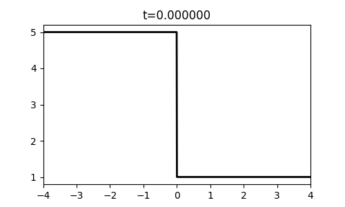
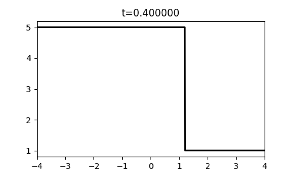
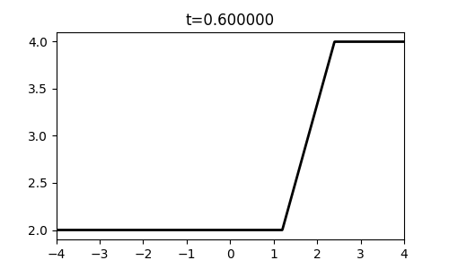

Üç boyutlu kütle muhafazası üzerinden süreklilik formül [2]'de işlendi. Şimdi tek boyutlu ortamda muhafaza kanunlarını işleyeceğiz, gaz dinamiği, genel aerodinamik konularında bu yaklaşım faydalı olacak. Sayısal çözmeye çalışılacak problemler, ki sonlu hacim (finite volume -FV-) yöntemi burada lazım, muhafaza kanunları içeren hiperbolik sistemler (hyperbolic systems of conservation laws) olacak. Bu tür sistemler zamana bağlı çoğunlukla gayrı lineer kısmi türevsel denklemlerdir (nonlinear PDE), ve aslında basit yapıları vardır. Tek yersel boyutta şuna benzerler [3, sf. 1],
$$ \frac{\partial }{\partial t} u(x,t) + \frac{\partial }{\partial x} f(u(x,t)) = 0 \qquad (1) $$
Daha önce [1]'de Burgers'in denklemini görmüştük, bir PDE,
$$ u_t + uu_x = 0 \qquad (2a) $$
Bu denklem (1) ışığında düşünülebilir, eğer $f(u) = u^2/2$ tanımlarsak, (1) formülü, yani $u_t + f(u)_x = 0$, formül (2a) ile aynıdır. O zaman,
$$ u_t + f(u)_x = 0, \qquad f(u) = \frac{1}{2}u^2 \qquad (2b) $$
Üstteki türden denklemleri tek boyutta çözmeyi işleyeceğiz öncelikle, çünkü çok boyutta çözüm tek boyuta indirgenerek yapılabiliyor.
Hiperbolik denklemleri analitik, kesin (exact) çözmek için birkaç konuyu yakından anlamak lazım. Birincisi Riemann problemleri; bu yaklaşımla hiperbolik PDE'nin başlangıç koşulu kesintili (discontinuous) bir fonksiyonla belirtiliyor ve bu çözümleri çoğu durumda daha rahatlaştırılıyor, diğeri hiperbolik muhafaza kanunlarının entegral formu.
İleride hiperbolik denklemleri FV ile sayısal çözerken de Riemann yaklaşımı faydalı olacak. Kesintili başlangıç içeren denklemler çözebilmek önemli çünkü FV ile sayısal çözüm yaparken uzayı parçalara bölüyoruz, ve her iki parçayı bir kesintili başlangıç içeren Riemann problemi olarak temsil ediyoruz, bu pek çok parça ortaya çıkartır tabii, bu sebeple tipik bir FV yaklaşımı her adımda pek çok Riemann problemini çözecektir.
Entegral form lazım, çünkü sınırlı farklılıklarda (finite difference) olduğu gibi ayrıksal olan fonksiyonun eşit aralıklarda tanımlı bir ızgaranın seçilmiş belli noktaları değil, her bölge, parçanın ortalaması, yani entegrali.
Entegral form ile başlayalım. Aslında diferansiyel form entegral formden türetilmiştir -bu türetim pürüzsüzlük faraziyesi üzerinden yapılmıştır-. Özellikle kesintili başlangıç şartları olduğu durumlarda diferansiyel formun her yerde düzgün işlemesi mümkün değil, çünkü kesintilerde türev alınamıyor. Ayrıca pür kesintisiz olsa bile şok oluşumu denen sebeplerle türevsel fonksiyonlar çözülemiyor. Bu problemlerle başedebilmek için entegral formu kullanmak gerekecek.
Formu yaratalım. İçinde gaz olan sadece tek boyutuna baktığımız bir tüp düşünelim, $x$ tüpün üzerindeki bir noktayı temsil edecek, $\rho(x,t)$ ise tüpün $x$ noktasında ve $t$ anındaki yoğunluğunu verecek diyelim. Yoğunluğu kullanarak $x_1$ ve $x_2$ noktaları arasındaki $t$ anındaki kütle
$$ \int _{x_1}^{x_2} \rho(x,t) \mathrm{d} x $$
ile hesaplanabilir. Tüpün duvarları tam izole ise ve kütle yoktan varedilip yokedilemeyeceğine göre tüpe gaz giriş ya da çıkış sadece $x_1,x_2$ noktalarından olabilir [3, sf. 14]. Şimdi bir gaz hareket hızı düşünelim, $v(x,t)$ ile, o zaman gaz akma oranı, ya da akış (flux)
$$ flux = \rho(x,t) v(x,t) $$
olur. Üstteki fiziksel kurallardan hareketle $[x_1,x_2]$ deki kütlenin değişim oranı $x_1$ ve $x_2$ noktalarındaki akışın farkına eşit olmalıdır,
$$ \frac{\mathrm{d}}{\mathrm{d} t} \int _{x_1}^{x_2} \rho(x,t) \mathrm{d} x = \rho(x_1,t) v(x_1,t) - \rho(x_2,t) v(x_2,t) $$
İşte bu muhafaza kanununun entegral formudur.
Üstteki formülü $t_1,t_2$ zaman aralığı için entegre edersek, ki böylece bu zaman içindeki tüm toplam akışı hesaplayabilelim, o zaman
$$ \int_{t_1}^{t_2} \left( \frac{\mathrm{d}}{\mathrm{d} t} \int _{x_1}^{x_2} \rho(x,t) \mathrm{d} x \right) = \int_{t_1}^{t_2} \rho(x_1,t) v(x_1,t) \mathrm{d} t - \int_{t_1}^{t_2} \rho(x_2,t) v(x_2,t) \mathrm{d} t $$
Soldaki kısım zaman üzerinden türevin yine zaman üzerinden entegrali, o zaman yokolabilir, Calculus'un Temel Teorisi üzerinden basitleştirirsek,
$$ \int _{x_1}^{x_2} \rho(x,t_2) \mathrm{d} x - \int _{x_1}^{x_2} \rho(x,t_1) \mathrm{d} x = \int_{t_1}^{t_2} \rho(x_1,t) v(x_1,t) \mathrm{d} t - \int_{t_1}^{t_2} \rho(x_2,t) v(x_2,t) \mathrm{d} t $$
Ufak bir yer değiştirme sonrası
$$ \int _{x_1}^{x_2} \rho(x,t_2) \mathrm{d} x = \int _{x_1}^{x_2} \rho(x,t_1) \mathrm{d} x + \int_{t_1}^{t_2} \rho(x_1,t) v(x_1,t) \mathrm{d} t - \int_{t_1}^{t_2} \rho(x_2,t) v(x_2,t) \mathrm{d} t $$
Üstteki formun değişik bir şekli ileride lazım olacak, zaman adımı atmaya uğraştığımız hesapsal yöntemlerde $t_1$ ve $t_2$ üzerinden bir entegral, hesabı bir sonraki zamana geçirmeye uğraştığımızda, adım attığımızda yardımcı oluyor.
Neyse şimdi diferansiyel forma geçise dönelim. Bu noktada $\rho(x,t)$ ve $v(x,t)$'nin türevi alınabilir fonksiyonlar olduğunu farz ediyoruz. Şimdi üstekini yine ufak bir değişim sonrası
$$ \int _{x_1}^{x_2} \rho(x,t_1) \mathrm{d} x + \int _{x_1}^{x_2} \rho(x,t_2) \mathrm{d} x - \int_{t_1}^{t_2} \rho(x_2,t) v(x_2,t) \mathrm{d} t - \int_{t_1}^{t_2} \rho(x_1,t) v(x_1,t) \mathrm{d} t = 0 \qquad (3) $$
olarak görelim. Eğer Calculus'un Temel Teorisi ile ilk iki terime $\int_{t_1}^{t_2} .. \mathrm{d} / \mathrm{d} t$ son iki terime $\int_{x_1}^{x_2} .. \mathrm{d} / \mathrm{d} x$ ekleyebilirsek, tüm terimlerde aynı entegraller olacağı için, $\int_{t_1}^{t_2} \int_{x_1}^{x_2} $ altında tüm terimleri gruplayıp basitleştirmek mümkün, ve bunlar sıfıra eşit olur. Bu bizi diferansiyel forma götürebilir. Yani
$$ \rho(x,t_2) - \rho(x,t_1) = \int_{t_1}^{t_2} \frac{\partial }{\partial t} \rho(x,t) \mathrm{d} t $$
ve
$$ \rho(x_2,t)v(x_2,t) - \rho(x_1,t)v(x_1,t) = \int _{x_1}^{x_2} \frac{\partial }{\partial x} (\rho(x,t)v(x,t)) \mathrm{d} x $$
eşitliklerinden hareketle, bunları (3)'e uygulayıp
$$ \int _{t_1}^{t_2} \int _{x_1}^{x_2} \left\{ \frac{\partial }{\partial t} \rho(x,t) + \frac{\partial }{\partial x} (\rho(x,t)v(x,t)) \right\} \mathrm{d} x \mathrm{d} t = 0 \qquad (4) $$
elde ediyoruz. Bu ifadenin $[x_1,x_2]$ ve $[t_1,t_2]$ arasındaki tüm değerlerde doğru olması gerektiği için entegre edilenin sıfır olması gerekiyor ([2]'dekine benzer bir mantık yürütüldü), yani
$$ \rho_t + (\rho v)_x = 0 $$
olmalı. Böylece kütlenin muhafaza kuralını diferansiyel formda elde etmiş olduk.
Bu formu izole halde çözmenin tek yolu $v$'nin önceden bilindiği durumdadır, ya da $v$ fonksiyon $\rho(x,t)$'ye bağlı bir fonksiyon olmalıdır, yani $f(\rho) = \rho v$ gibi. Bu durumda üstteki ifade $\rho$ için tek sayısal muhafaza kanunu haline gelir,
$$ \rho_t + f(\rho)_x = 0 $$
Zayıf Form
Daha önce diferansiyel formun her durumda çözülemediğinden bahsettik. Fakat (4)'teki entegral form da çalışılması zor bir halde. Daha rahat çalışılabilen bir entegral forma erisemez miyiz? Bu forma erişmek için diferansiyel denklemlerde bazen kullanılan bir tekniği kullanacağız, bu teknikle çözümü tanımlamak için daha az pürüzsüzlük istediğimiz durumlarda diferansiyel denklemi tekrar yazıyoruz. Tekrar yazmak için denklemi alıp onu bir pürüzsüz "test fonksiyonu" ile çarpıyoruz, bu çarpımı birkaç kere bir tanım kümesi üzerinden entegre ediyoruz, ve Parçalı Entegral tekniğini kullanarak türevi $u$'dan alıp pürüzsüz olan test fonksiyonuna aktarıyoruz. Böylece $u$ üzerinde daha az türev olan bir formül elde ediyoruz, ve $u$'nun pürüzsüz olma şartı gevşemiş oluyor [3, sf. 27].
Test fonksiyonu hem zamanda hem uzayda pürüzsüz bir fonksiyon $\phi$ olsun, ayrıca derlitoplu desteğe sahip (compactly supported), yani belli bir kısıtlı alan dışında sıfır, bu örnekte sonsuzluğun kendisi alanın dışında kabul edilir ve o noktada $\phi$ sıfır olur [4]. Bu ileride bazı iptalleri yaparken işimize yarayacak.
(1) formülünden başlayalım,
$$ u_t + f(u)_x = 0 $$
Bu fonksiyonu $\phi$ ile çarpıp uzay ve zaman üzerinden entegre edersek,
$$ \int _{0}^{\infty} \int _{-\infty}^{\infty} u_t \phi + f(u)_x \phi \mathrm{d} x \mathrm{d} t = 0 \qquad (5) $$
elde ederiz. Bu denklemdeki ilk terime zaman üzerinden, ikinci terime de uzay üzerinden Parçalı Entegral tekniğini uygulayacağız. PE tekniğini hatırlarsak,
$$ \int y \mathrm{d} z = y z - \int z \mathrm{d} y $$
eşitliği idi, ya da belirli entegraller (definite integrals) için,
$$ \int_{a}^{b} y \mathrm{d} z = [y z]_{a}^{b} - \int_{a}^{b} z \mathrm{d} y \qquad (6) $$
Kısım olarak $y = \phi \mathrm{d} x$, $\mathrm{d} z = u_t$ atayalım, şimdi zaman üzerinden PE alıyoruz, dikkat bu entegral dışarıdan içeri doğru yani zaman için entegral (5)'in tüm iç kısmı
$$ \int _{0}^{\infty} \underbrace{\int _{-\infty}^{\infty} u_t \phi}_{dx dt\textrm{ ile beraber iç kısım}} + f(u)_x \phi \mathrm{d} x \mathrm{d} t = 0 $$
üzerinde alınmış olacak. Dedigimiz gibi once $y,\mathrm{d} z$ tanımladık, o zaman $z=u$, $\mathrm{d} y = \phi_t \mathrm{d} x \mathrm{d} t$ olur. (6) ile yerine koyarsak,
$$ \int_{-\infty}^{\infty} [ u \phi ]_{0}^{\infty} - \int _{0}^{\infty} \int_{-\infty}^{\infty} u \phi_t \mathrm{d} x \mathrm{d} t \qquad (7) $$
Test fonksiyonu tanımından $\phi(\pm \infty, t) = \phi(x, \pm \infty) = 0$ olduğunu biliyoruz, yani
$$ [ u \phi ]_{0}^{\infty} = \cancel{u(x,\infty)\phi(x,\infty)} - u(x,0)\phi(x,0) $$
$$ = u(x,0)\phi(x,0) $$
Bu sayede (7) basitleştirilir,
$$ - \int _{0}^{\infty} \int_{-\infty}^{\infty} u \phi_t \mathrm{d} x \mathrm{d} t + \int_{-\infty}^{\infty} u(x,0)\phi(x,0) $$
Benzer bir yaklaşımla zaman üzerinden PE alınır [4], ve
$$ \int_{0}^{\infty} \int_{-\infty}^{\infty} f(u)_x \phi \mathrm{d} x \mathrm{d} t = - \int_{0}^{\infty} \int_{-\infty}^{\infty} f(u) \phi_x \mathrm{d} x \mathrm{d} t $$
Son iki formül birleştirilince,
$$ \int_{0}^{\infty} \int_{-\infty}^{\infty} u \phi_t + f(u) \phi_x \mathrm{d} x \mathrm{d} t = - \int_{-\infty}^{\infty} u(x,0) \phi(x,0) \mathrm{d} x $$
Riemann Problemi
Kesintili ve iki parça içeren bir fonksiyon ile Burgers denkleminin çözümü mümkün; bu aslında basit, $u_t + u u_x = 0$ denklemi için başlangıç şartları
$$ u(x,0) = \left\{ \begin{array}{ll} u_l & x < 0 \\ u_r & x > 0 \end{array} \right. \qquad (9) $$
olduğu durumda çözüm özgün bir zayıf çözümdür, eğer $u_l > u_r$ ise (bu mümkün seçeneklerden birincisi)
$$ u(x,t) = \left\{ \begin{array}{ll} u_l & x < st \\ u_r & x > st \end{array} \right. $$
ki $s$ şok hızıdır. Ya da
$$ u(x,t) = \left\{ \begin{array}{ll} u_l & x/t < s \\ u_r & x/t > s \end{array} \right. $$
Kesinti noktası $s$ hızında sağa ilerler, $t$ anında olacağı yer $st$'dir.
Daha önce tek boyutlu lineer taşınım akımı (convection) ile gördüğümüz durum burada da var, orada çözüm $u(x,y) = u_0(x-ct)$ idi, dalga hızı $c$. Şimdi hız $u$ bu $s$ şok hızınını verir, Burgers için hesabı $s = (u_l + u_r) / 2$. Şok hızının hesabı için kesinti bölgesinin yeterince uzağında $M$ ve $-M$ noktalarını seçelim, bu iki nokta arasındaki toplam kütlenin / dalganın değişiminin hızı şok hızı $s$ olacaktır.
$$ \frac{\mathrm{d}}{\mathrm{d} t} \int_{-M}^{M} u(x,t) \mathrm{d} x = f(u_l) - f(u_r) \qquad (8) $$
Salt entegralin nasıl hesaplanacağına bakarsak [3, sf. 31],
$$ \int_{-M}^{M} u(x,t) \mathrm{d} x = \int_{-M}^{st} u_l \mathrm{d} x + \int_{st}^{M} u_r \mathrm{d} x $$
$$ = (M+st)u_l + (M-st)u_r $$
Şimdi zaman türevini geri koyalım, bu sağ tarafta $s(u_l-u_r)$ verir, hepsi bir arada,
$$ \frac{\mathrm{d}}{\mathrm{d} t} \int_{-M}^{M} u(x,t) \mathrm{d} x = s(u_l-u_r) $$
(8)'in sağ tarafını üstteki formüle koyunca,
$$ f(u_l) - f(u_r) = s(u_l-u_r) $$
$$ s = \frac{f(u_l) - f(u_r)}{u_l-u_r} $$
Böylece genel bir ifade elde ettik. Burgers denklemi özelinde, $f(u) = u^2 / 2$ olduğuna göre,
$$ f(u_l) - f(u_r) = \frac{1}{2} u_l^2 - \frac{1}{2} u_r^2 $$
O zaman
$$ \frac{1}{2} (u_l + u_r)(u_l - u_r) = s(u_l-u_r) $$
diyebiliriz [5, sf. 46], basitleştirince,
$$ s = \frac{1}{2} (u_l + u_r) $$
Burgers denklemi çözümü (9)'un aynı zamanda bir zayıf çözüm olduğunun ispatı [6, sf. 8]'de bulunabilir. Not: ispat sadece 1. seçenek $u_l > u_r$ için geçerli, diğer seçenekler de var.
İkinci seçenek, seyreltilmiş dalga sonucu, bu zayıf çözüm başlangıçta $u_l < u_r$ olduğu zaman ortaya çıkıyor. Bu çözüm
$$ u(x,t) = \left\{ \begin{array}{ll} u_l & x < u_l t \\ x/t & u_l t \le x \le u_r t \\ u_r & x > u_r t \end{array} \right. $$
Sağ taraf yine daha önce olduğu gibi şu hale çevirilebilir (ki birazdan görülecek kodu anlamak için de bu form faydalı)
$$ u(x,t) = \left\{ \begin{array}{ll} u_l & x/t < u_l \\ x/t & u_l \le x/t \le u_r \\ u_r & x/t > u_r \end{array} \right. $$

Çözümün Burgers denklemi için doğru olduğunu doğrulamak zor değil, mesela orta şart $u_l \le x/t \le u_r $ kısmına bakalım, bu çözümü (2a)'ya sokarsak,
$$ \frac{\partial u}{\partial t} + u \frac{\partial u}{\partial x} = \frac{\partial }{\partial t} \left( \frac{x}{t} \right) + \frac{x}{t} \frac{\partial }{\partial x} \left( \frac{x}{t} \right) = -\frac{x}{t^2} + \frac{x}{t} \frac{1}{t} = 0 $$
İlk ve üçüncü şartın çözüm olduğu bariz çünkü sabit sayılar, ve türevleri alınırken sıfırlanacaklar.
def exact_riemann_solution(xi,u_l,u_r):
def qf(q): return 0.5*q*q
# Shock wave
if u_l > u_r:
shock_speed = (qf(u_l)-qf(u_r))/(u_l-u_r)
q = (xi < shock_speed)*u_l \
+ (xi >=shock_speed)*u_r
return q
# Rarefaction wave
else:
q = (xi<=u_l)*u_l \
+ (xi>=u_r)*u_r \
+ (u_l<xi)*(xi<u_r)*xi
return q
def shock():
u_l, u_r = 5.0, 1.0
for t in np.linspace(0,1,6):
outfile = 'rieout/shock-%d.png' % (t*10)
fig, ax = plt.subplots(figsize=(5, 3))
x = np.linspace(-4, 4, 1000)
q = np.array([exact_riemann_solution(xi/(t+1e-10),u_l,u_r) for xi in x])
ax.set_xlim(-4,4)
ax.plot(x,q,'-k',lw=2)
ax.set_title('t=%f' % t)
plt.savefig(outfile)
shock()


def rarefaction():
u_l, u_r = 2.0, 4.0
for t in np.linspace(0,1,6):
outfile = 'rieout/rarefaction-%d.png' % (t*10)
fig, ax = plt.subplots(figsize=(5, 3))
x = np.linspace(-4, 4, 1000)
q = np.array([exact_riemann_solution(xi/(t+1e-10),u_l,u_r) for xi in x])
ax.set_xlim(-4,4)
ax.plot(x,q,'-k',lw=2)
ax.set_title('t=%f' % t)
plt.savefig(outfile)
rarefaction()


Animasyon olarak
! convert -delay 20 -loop 0 rieout/shock*.png shock.gif
! convert -delay 20 -loop 0 rieout/rare*.png rarefaction.gif
Animasyon sonuç dosyaları [7] ve [8]'de bulunabilir.
Kaynaklar
[1] Bayramlı, Hesapsal Bilim, Hesapsal Sıvı Dinamiğine Giriş
[2] Bayramlı, Fizik, Sıvılar, 1
[3] Leveque, Numerical Methods for Conservation Laws
[4] Dong, Numerical Methods for Conservation Laws (Part 1) https://jdongg.github.io/post/conservation-laws-1/
[5] Cooper, Introduction to PDEs with Matlab
[6] Cameron, Notes on Burgers' Equation, https://www.math.umd.edu/~mariakc/burgers.pdf
[7] Bayramlı, Animasyon, Şok Dalgası, https://github.com/burakbayramli/classnotes/raw/master/compscieng/compscieng_bpp50fv1/shock.gif
[8] Bayramlı, Animasyon, Seyrelen (Rarefaction) Dalga https://github.com/burakbayramli/classnotes/raw/master/compscieng/compscieng_bpp50fv1/rarefaction.gif
{kind=link}
{kind=link}